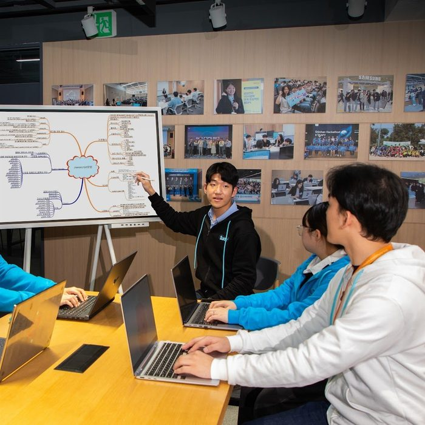
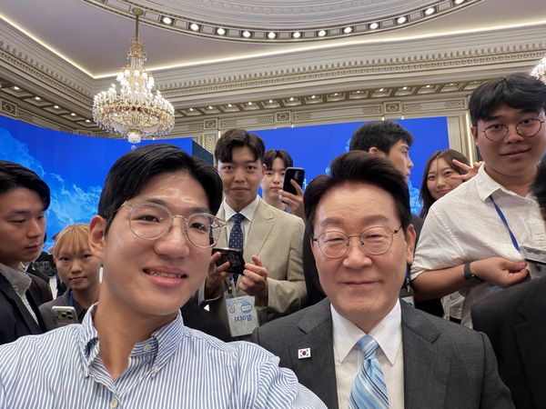
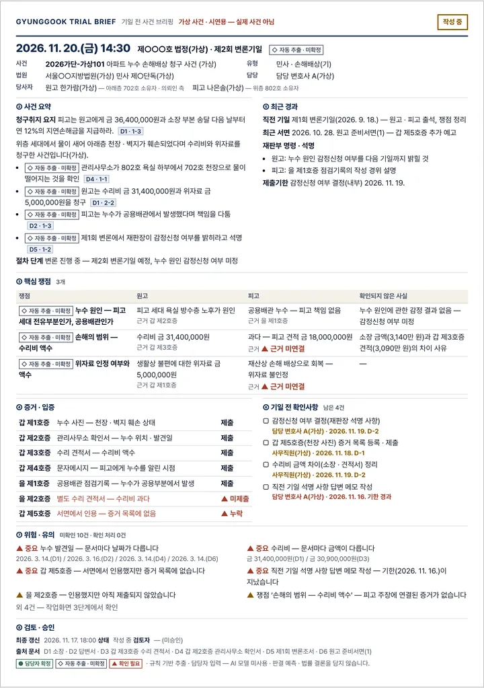
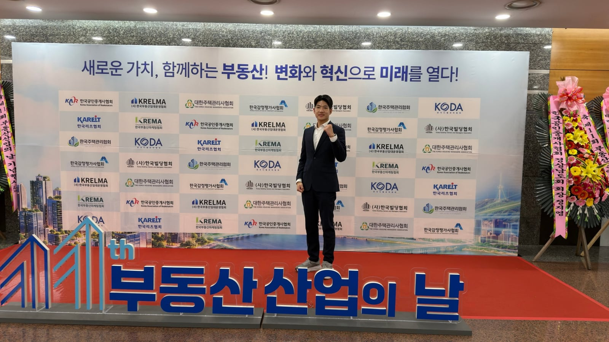
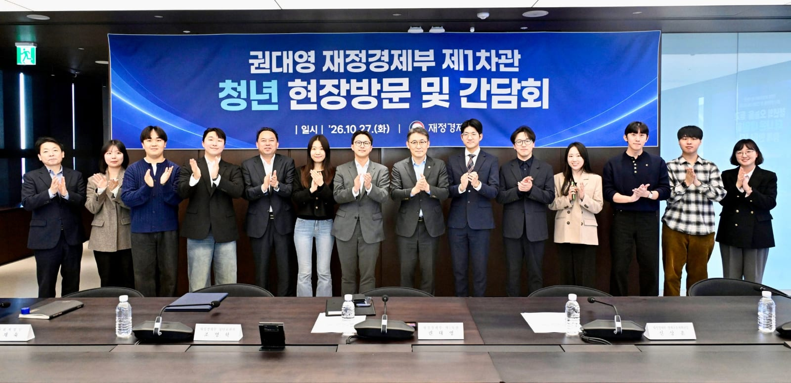

어디서부터 보시겠어요? Start Here
011–2분 요약
채용 담당자
한 장 이력과 실무 사례 8선
02직접 작동
실무 · 기술 검증
시제품과 공개 시연을 직접 써 보기
03보도 · 기록
신뢰 · 현장 증거
언론 보도 · 현장 사진 · 비공개 기록
Seoul · Portfolio 2026
Real Estate AI · Strategy · Policy
부동산을 AI로 읽고, 컨설팅과 정책으로 잇는 실무자
복잡한 문제를 구조화하고,
기술로 실행합니다.
청약 · 공공임대 추천 서비스와 감정평가 3D 실지조사를 직접 만들어 부동산 현장에서 시연했습니다. 법률 · 부동산 실무에서 다진 판단을 AI 전략 컨설팅과 정책 제안으로 잇습니다.
Signature부동산 × AI
KREMA AI 전시관과 부동산산업의 날에서 직접 시연한 두 작품. 같은 판단이 컨설팅과 정책으로 이어집니다.
011–2분 요약
한 장 이력과 실무 사례 8선
02직접 작동
시제품과 공개 시연을 직접 써 보기
03보도 · 기록
언론 보도 · 현장 사진 · 비공개 기록
업무 흐름 · 제약 · 제도 · 이해관계를 먼저 읽습니다.
근거광명시흥 3기 신도시 보상자료를 절차와 쟁점으로 구조화(발표자료 77장)
정의한 문제를 자동화와 제품으로 옮깁니다.
근거경국 AX 3종 · 급여명세서 자동 발송 · 고객 메일 자동 분류 · 직접 만든 도구 4가지
결과를 판단하는 사람이 이해하도록 만들고, 정책 논의의 자리에 나갑니다.
근거변호사 검토로 끝나는 AX 구조 · 국민 대토론회 정책 제안 발표 · 청년 정책 거버넌스
16결과물11배포 · 사내 운영4AI · 데이터 전문교육3수상 · 표창
주요 실무 사례 Case Studies
법무법인 경국 전략기획실의 법률 AI 전환 · 프로세스 개선 · 시스템 구현
법률산업 업무혁신AI · 데이터 기반 문제 해결전략기획 · 사업적 사고
달라진 일하는 방식 — 정비사업 입찰·용역비 분석 실제 수행
실제 수행 경국에서 직접 수행(자료 비공개) 공개 시연 가상 데이터 시연 향후 확장 미구현 — 세부 맥락은 사례집에서.
01 소개 Profile



01 · Profile김유빈 · Yubin Kim — 법무법인 경국
02 · SSAFY 13기프로젝트 아키텍처 발표
03 · Youth Day 2026청와대 청년의날 — 대통령과 함께
02 역량 구조
꼭짓점을 고르면 핵심 한 줄 · 대표 실적 2개 · 관련 자격과 교육만 보입니다.
숙련도 점수가 아니라 근거가 있는 여섯 영역의 지도입니다.
01 / 06 · AI Strategy & Problem Framing
무엇을 먼저 하고, 무엇을 AI에 맡길지 정합니다
대표 실적
자격 · 교육
법무법인 경국 전략기획실명지대 AI 데이터 매니지먼트 그랜드마스터
근거 보기전략 판단의 기록 Strategy Cases
Technology for Execution. Judgment for Direction.
시스템은 분석과 실행을 돕습니다. 그러나 결과가 큰 결정 — 무엇을 문제로 삼을지, 이해관계가 부딪칠 때 무엇을 앞세울지, 어떤 위험을 받아들일지 — 은 그 결정에 책임지는 사람이 내립니다. 직접 만든 두 시스템에서 그 경계가 어디인지 확인했습니다.
실지조사 절차와 감정평가·공간정보 관련 조문, 지목 28종을 교재로 읽고 외우던 학습.
3D로 옮긴 서울을 걸으며 의뢰 수임부터 등기촉탁까지 5단계를 직접 수행하고, 조문 카드와 지목을 장소에서 수집.
어떤 절차를 어떤 순서로 밟아야 평가가 성립하는지, 어느 조문을 어느 현장에 붙여야 기억되는지는 감정평가 실무를 알아야 설계할 수 있습니다.
Playable — 직접 만든 것을 직접 해보기
감정평가 실무를 그대로 옮겼습니다. 절차를 설명하는 대신 절차를 걷게 만들었습니다.
담당자가 메일함을 직접 확인하며 사안의 우선순위를 판단하던 업무.
메일이 들어오면 자동으로 모아 급한 순서대로 1차 분류.
무엇을 리스크로 볼지 정하는 건 결국 사람 몫이고, 그 기준은 법무 감각에서 나옵니다.
두 경우 모두 도구가 맡은 일은 빨라졌고, 기준을 정하는 일은 사람에게 남았습니다. 그 기준을 세우고 실행까지 옮기는 것이 제 일입니다.
03 법무법인 경국 · 법률 AI 전환 Legal AX · Six Systems
정비사업 실무의 AX 를 송무 · 정보 탐색 · 범용 기업 운영으로 넓힙니다. 최종 법률 판단은 변호사가 내립니다.

대표 프로젝트법률 AX · 업무혁신 · 제품기획개인 구현 시제품 · 경국 도입 아님
사건기록 · 기일 준비 → 쟁점 · 증거 · 미결 과제 1페이지 브리핑
불일치 · 누락 15건 전수 검출그 밖의 표시 0건A4 1장 PDF개인 공개 시연
사건기록과 기일 준비사항을 연결해 변호사가 핵심 쟁점 · 증거 · 미결 과제를 빠르게 확인할 수 있는 1페이지 브리핑 시스템을 설계 · 구현한 프로젝트
사건 선택 → 자료 확인 → 불일치 탐지 → 담당자 검토 → 1페이지 브리핑 → PDF 출력
AX 시스템 6종 = 경국 실무 기반 3종 + 개인 공개 시연 3종 범용 AX 확장 3종(C)과 ‘16개 결과물’은 따로 셉니다.
01 RE:INTELLIGENCE · Regulatory Monitoring경국 사내 구축 · 화면 비공개
흩어진 법령 · 고시 변화 → 사업지 · 단계별 변호사 검토 큐
사내 구축상급자 검수 · 공식 도입실제 수행
가상 사업지 · 개념 모형 — 실제 지번 · 용도지역 · 도시계획이 아닙니다
가상 사업지 A재개발 · 노후 저층 주거지(가상)
규제 레이어 — 누르면 부지의 해당 부분이 표시됩니다
높이 기준 · 계획 매스 위의 기준면 — 남색 면
변경 감지 후보 검토 대상 표시 · 법적 효력 판단 아님
가상 조례 개정안 — 건축물 높이 기준 관련 문구 변경 감지관련 사업 단계 · 사업시행계획 — 건축계획(높이) 검토
사업지 A/B/C 를 고르면 필지 · 건물 배치 · 사업 단계가 함께 바뀌고, 규제 레이어를 고르면 그 레이어가 부지의 어느 부분에 걸리는지 보입니다.
사내 구축 시스템 — 실제 화면 · 자료 비공개, 위 시연은 가상비공개 기록 열람실(암호) →
실무 01 · Practice
분석 · 발표 자료 77장 — 소프트웨어 시스템이 아닙니다
보상 관련 발표자료 77장을 만들며 감정평가 → 보상협의 → 재결로 이어지는 절차와 쟁점을 정리했습니다.
실무 02 · Practice
사내 운영 · 급여 정보를 다루어 화면과 코드는 비공개
네이버웍스 메일 API로 급여명세서의 생성과 발송을 자동화해, 반복되던 발송 절차를 표준화했습니다.
운영 흐름 Operational Workflow
회사로 들어오는 고객 메일을 자동으로 모아 '지금 답할 것 · 오늘 안에 볼 것 · 광고처럼 넘겨도 되는 것'으로 나눠 보여 주는 업무 화면. 담당자는 위에서부터 차례로 처리하면 됩니다.
설계 원칙무엇을 '급함'으로 볼지 기준은 사람이 정하고, 1차 분류만 컴퓨터에 맡겼습니다.
시스템 바로가기의뢰인 · 사건 정보와 사내 화면은 공개하지 않습니다.
04 정책 참여 Policy Participation & Public Deliberation
법률 · 부동산 현장의 문제는 결국 제도와 이해관계의 문제로 이어집니다. 그래서 소프트웨어를 만드는 데서 멈추지 않고, 정책 논의의 자리에 나가 듣고, 제안하고, 운영에 참여합니다.
참석과 제안은 정책 결정이 아닙니다. 채택 여부는 적지 않습니다.
05 직접 만든 도구
혼자 끝까지 만들어 배포한 개인 제품 4종 — 회사 시스템이 아닙니다.
지금 열려 있는 공고를 지도와 숫자로청약홈 분양공고와 LH 임대공고를 공공데이터 API로 모아, 지역별로 열려 있는 공고 수와 가장 가까운 마감을 먼저 보여 줍니다.
직접 만들어 사용Vercel 배포 완료01 / 04
흩어진 청약 · 임대 공고 → 조건 3단계로 지원 가능 후보 정리
한국경제 · 중앙일보 소개개인 공개 시연
이어지는 역량흩어진 주거 정보를 사용자의 판단 기준으로 다시 묶기 — 부동산 영역의 의사결정 지원
추천 원칙자격 · 예산 · 선호 적합도 · 마감 긴급도를 한 점수로 섞지 않고 따로 보여 줍니다. 확인되지 않은 자격은 불충족으로 단정하지 않고, 당첨 확률은 계산하지 않습니다.
2026. 11. 4. 실제 서비스 화면 캡처 — 화면 속 공고와 숫자는 캡처 시점의 공개 데이터입니다.
법조 시장의 지금을 첫 화면에22대 국회 발의 법률안의 처리 현황, 개업 변호사 수, 다음 공휴일, 불변기간 만료일 계산기를 첫 화면에 모았습니다.
직접 만들어 사용Vercel 배포 완료02 / 04
기관마다 흩어진 법조 정보 → 매일 갱신 상황판 · 기한 계산기
국회 · 법제처 · 대한변협 공개 자료개인 공개 시연
이어지는 역량흩어진 법률 정보를 리서치 흐름으로 — 출처와 연결 상태를 함께 공개
데이터 원칙출처 없는 예시 수치는 넣지 않습니다. 인증키가 없거나 수집에 실패한 값은 '인증키 필요' · '불러오지 못함'과 이유를 그대로 보여 주고, 지방회 합계가 맞지 않으면 화면에 올리지 않습니다.
2026. 11. 5. 실제 서비스 화면 캡처 — 화면 속 법률안 · 법령 · 회원 수는 캡처 시점의 공개 데이터입니다.
AI 직원이 일하는 모습을 사무실처럼출근 · 작업 · 대기 상태와 진행 단계를 한 화면에서 봅니다. 공개 시연 모드는 서버 없이 이 브라우저 안에서만 돕니다.
직접 만들어 사용Vercel 배포 완료03 / 04
보이지 않는 AI 작업 → 배정 · 실행 관찰 · 사람 승인 대시보드
사람 승인 단계개인 공개 시연
이어지는 역량배정 · 실행 가시성 · 사람의 승인 — AX 를 운영하는 원칙 그 자체
운영 원칙에이전트가 한 일은 사람이 검증 · 승인해야 끝납니다. 시연 모드의 가상 활동은 실제 성과 지표에 합산하지 않습니다.
2026. 11. 4. 공개 시연 모드 화면 캡처 — 화면 속 직원과 업무는 시연용 가상 데이터입니다.
오늘의 국정을 첫 화면 한 장에날짜와 주요 지표, 분야별 소식을 첫 화면에 모읍니다. 섹션 필터 · 검색과 라이트 · 다크 모드를 지원합니다.
직접 만들어 사용Vercel 배포 완료04 / 04
여러 포털의 국정 · 경제 소식 → 중복 거른 한 장 상황판
RSS · 시세 서버리스 수집개인 공개 시연
이어지는 역량정책과 시장 정보를 한 장의 개관으로 — 공공 영역의 흐름 읽기
수집 원칙수집이 실패해도 화면이 비지 않게 — CDN 20분 캐시와 stale-while-revalidate로 즉시 응답하고, 실패하면 저장된 스냅샷으로 대체합니다. 포털은 기사를 옮겨 실을 뿐 매체가 아니므로 출처 · 언론사 수에서 뺍니다.
2026. 11. 5. 실제 서비스 화면 캡처 — 화면 속 기사와 지표는 캡처 시점의 공개 뉴스 · 시세입니다.
연구 · 실험 기록 Research Archive
학습 시뮬레이터 · 생활 서비스 · 제안서 · AI 영상 — 네 가지 도구 · 법률 AX 와 성격이 달라 따로 모았습니다.
013D 학습 시뮬레이터
Vercel 배포 완료
02피부 진단 · 성분 처방 웹
Vercel 배포 완료
03말씀 · 인문학 서재 앱(PWA)
Vercel 배포 완료
04기능 제안서(PRD)
Vercel 배포 완료
05살림 기록 서비스(PWA)
Vercel 배포 완료
06청약 데이터 대시보드
Vercel 배포 · 데모 종료
07AI 카드뉴스 · 영상
Google Drive 스트리밍 자산 구축 완료
08AI 브랜드 필름
Google Drive 스트리밍 자산 구축 완료
09AI 캠페인 필름
Google Drive 스트리밍 자산 구축 완료
10AI 프로모션 영상
Google Drive 스트리밍 자산 구축 완료
06 성장 경로
연대순 목록보다 먼저, 다루는 문제가 어떻게 커져 왔는지 봅니다. 시기는 서로 겹칩니다 — 아래 단계는 순서가 아니라 문제의 복잡도입니다.
삼성청년SW·AI아카데미(SSAFY) 13기 이수(2025) · 서울대 AIED 4기 수료 · KREMA 상담 RAG 실습 · 건국대 스마트건설기술교육 · 서울 핀테크 아카데미 14기 수료 · 명지대 AI 데이터 매니지먼트 전 과정 수료(그랜드마스터)
법무법인 경국 — 정비사업 AX 3종 · 급여명세서 자동 발송 · 고객 메일 자동 분류 · 보상자료 77장
집캐치 · 법조시장 한눈에 · Atelier AX · 국정 한눈에 — 직접 기획 · 개발 · 배포
국민 대토론회 정책 제안 발표 · 서초청년네트워크 부위원장 · 정책 간담회 · 공론장
기술 구현 · 법률 · 부동산의 산업 이해 · 제도에 대한 이해를 함께 갖추고, 결과에 책임지는 결정을 다루는 자리 — 앞으로의 방향입니다.
지향 · 진행 중Highlight — 2026
청년 대표로 초청되어 ‘2026 청년의 날 오픈마이크’ 현장에 참석했습니다. 청년 정책의 방향과 현장의 과제를 국정 최고 의사결정 단위에서 직접 듣고 교류한 기록입니다.
사진 ⓒ연합뉴스 · 방송 화면 ⓒ전주MBC · 현장 사진 직접 촬영
현장 사진 전체 보기청와대 청년의날, 그다음 장 — 현장 일지

Field Diary — 2026. 11. 11 집캐치 발표 · 내빈 응대
“새로운 가치, 함께하는 부동산! 변화와 혁신으로 미래를 열다!”행사 슬로건
제11회 부동산산업의 날에서 한국부동산마케팅협회(KREMA) 홍보부스에 참여해, 직접 개발한 청약 · 공공임대 공고 탐색 서비스 집캐치를 발표 · 시연하고 찾아온 내빈을 응대했습니다. 한국경제 · 중앙일보가 이날 집캐치를 실명으로 소개했습니다. 보도에 따르면 국토교통부 관계자와 9개 부동산경제단체 대표, 프롭테크 기업인, 학계 전문가 등 400여 명이 참석했습니다.
매력일자리에 참여한 청년 김유빈 씨는 청약홈과 LH 청약플러스의 청약·공공임대 모집공고를 지도에 모아 보여주는 ‘집캐치’를 선보였다.중앙일보 · 2026. 11. 11한국부동산마케팅협회 4명, ‘부동산산업의 날’ 국토부 장관 표창
서울시 매력일자리 참여자 김유빈 씨가 개발한 ‘집캐치(ZIPCATCH)’도 소개됐다.
보도 · 서울파이낸스 · 집캐치 소개 · 헤럴드경제 · 행사
현장 사진 · 보도 인용은 기사 원문의 한 문장
현장 사진 · 보도 보기
Field Diary — 2026. 10. 27 간담회 참석
권대영 재정경제부 제1차관의 취임 후 첫 현장 행보로 마련된 청년 간담회에 법무법인 경국 소속으로 참석했습니다. 간담회에 앞서 SVC Seoul 입주 청년 창업기업의 AI 기반 주거지 탐색 · 공공사업 검색·매칭 서비스 시연 참관이 있었고, 대학생 · 창업가 · 직장인 청년들이 주거 · 일자리 · 서민금융에 대한 현장 의견을 전했습니다.
현장 사진
간담회 사진 전체 보기Professional
법률 AI 전환을 기획·구축 — 법령·규제 변화 관제 · 정비사업 총회결의 위험 검토 · 공사도급계약 변경 위험 분석 시스템을 만들고, 송무 담당자들과 역할 분담(반복 대조는 프로그램, 판단은 담당자)을 함께 정해 상급자 검수를 거쳐 공식 도입(전 구성원 사용). 정비사업 공공입찰·용역비 데이터 정기 수집·정형화(단가 비교 기준선), 광명시흥 3기 신도시 보상자료 분석(발표자료 77장), 급여명세서 자동 발송 · 고객 메일 분류, 송무 지원(소장 편집 · 전자공탁 · 법원 외근)과 법률 콘텐츠 제작.
실무 사례집 보기독일 베를린 소재 Vattenfall Wärme Berlin AG 기술교육부서(Technical Training Department)에서 전기공학 · 배선 · 보호설비 · 기술기준 관련 실습에 참여했습니다. 2022년 11월 발급된 추천서에는 업무의 신뢰성, 성실한 수행과 팀워크에 대한 긍정적인 평가가 담겨 있습니다. 정규직 재직이 아닌 인턴십이며, 회사명은 2022년 당시 기준입니다.
인턴십 상세 · 증빙 요약AI · Data & Technical Education
AI 데이터 매니지먼트 과정의 네 개 트랙을 모두 수료해, 전 과정을 마친 수강생에게 주는 그랜드마스터 배지를 받았습니다.
서울특별시와 금융 교육기관이 협약해 운영하고 금융투자협회 금융투자교육원이 진행하는 핀테크 전문교육을 약 11주 동안 금 · 토요일에 이어 들었습니다. 금융 · 디지털 서비스의 구조와 산업을 이해하는 범위를 넓힌 과정입니다.
문서 검색 · 벡터 DB · 서버리스 RAG API · 상담 화면을 하나로 잇는 구축 실습입니다. 부동산 상담이라는 도메인에 검색증강생성(RAG)을 연결해 본 교육으로, KREMA AI 마케팅 기획자 양성 3기와는 별개입니다.
인공지능 메커니즘의 비즈니스 도메인 최적화 적용, 구조화된 프롬프트 엔지니어링 아키텍처의 이해와 교수법 체화.
인공지능 기반의 부동산 시장 데이터 분석과 표적 세그먼트 도출을 학습하고, 매체별 디지털 마케팅 전략 수립 및 자동화 설계 역량을 습득.
서울시 매력일자리 3기 교육생으로 AI 활용 마케팅기획자 양성과정에 참여했습니다(교육과정 · 경력 아님). 수료 후 회원사 매칭으로 법무법인 경국에 입사했습니다.
건국대학교 대학일자리플러스사업단과 한국건설기술인협회가 함께 연 프로그램에서 BIM · 스마트 건설안전 · 드론 · 건설로봇을 현업 전문가와 연구자에게 배웠습니다. 건설산업의 데이터와 현장 기술을 이해하기 위한 교육이며, 법정 건설기술인 의무교육이 아닙니다.
소프트웨어 아키텍처와 인공지능 알고리즘을 실무 프로젝트 중심으로 학습하여 엔지니어링 역량을 내재화.
독일 베를린 OSZ TIEM(Technische Informatik, Industrieelektronik und Energiemanagement)에서 전기공학 · 기술실습과 독일어 · 영어, 수학, 경제 · 사회 분야 수업에 참여했습니다. 교육 참여 증명서에는 과제 수행과 교육 현장에서의 성실한 태도에 대한 긍정적인 평가가 기재돼 있습니다. 학위 · 자격이 아닌 교육 참여 증명입니다.
베를린 2022 기록 보기Leadership & Public
한국부동산경제단체연합회가 주최하고 한국공인중개사협회가 주관한 제11회 부동산산업의 날(2026. 11. 11 · 서울 강남구 건설회관)에서 한국부동산마케팅협회(KREMA) 홍보부스에 참여해 직접 개발한 집캐치를 발표 · 시연하고 내빈을 응대했습니다. 한국경제 · 중앙일보가 이날 집캐치를 실명으로 소개했습니다
행사 현장 보기2026년 제5기 서리풀기자단으로 지역의 공간 · 문화 현장을 취재하고, 서초구 소식지 2026년 11월호에 공동 기명으로 기사가 실렸습니다(서리풀 아트테리어 · 루이스폴센 · 두성종이). 구민 기자단 활동이며 서울시민기자단과 별개입니다.
소식지 지면 보기권대영 재정경제부 제1차관이 서울 마포구 창업기업 지원시설 SVC Seoul에서 연 청년 현장방문 및 간담회(2026. 10. 27)에 법무법인 경국 소속으로 참석했습니다. 차관 취임 후 첫 현장 행보로 마련된 자리로, 대학생 · 창업가 · 직장인 청년들이 주거 · 일자리 · 서민금융 등 3대 사회정책에 대한 현장 의견을 전했습니다.
간담회 현장 보기‘청년이 생각하는 성평등정책, 어디까지?’를 주제로 연세대 백양누리 그랜드볼룸에서 열린 공개형 공론장(2026. 10. 25)에 참석해 청년 세대의 시각으로 정책 토론에 함께했고, 현장에서 성평등가족부 장관과 함께했습니다.
공론장 현장 보기민주연구원이 주최·주관하는 2026 민주청년지도자 양성과정에 입학(2026. 10. 24)해 12월 13일까지 정책·리더십 과정을 이어 가고 있습니다. 입학식에서 김민석 당대표·강득구 민주연구원장과 함께했고, 이광재 예산결산특별위원장의 특강에서 직접 질문했으며, 박홍근 기획예산처 장관과도 현장에서 함께했습니다. 11월 14일 질의 · 발표 세션에서 마이크를 잡고 발언했고, 강득구 민주연구원장 · 김경수 청와대 정무특보, 하정우 부위원장과 함께했습니다.
입학식 · 11. 14 현장 보기코엑스 D홀 KREMA AI 전시관 C-10 부스에서 청약·공공임대 맞춤 추천 서비스 집캐치와 3D 감정평가 필드워크를 소개하고, 제작 배경과 작동 방식을 설명하며 관람객 질문에 답했습니다.
박람회 현장 보기〈2026 세대·젠더 분야 현장형 국민대화 국민 대토론회〉(2026. 9. 29 · aT센터) 자산 분야 트랙에서 청년 미래배당펀드팀으로 ‘청년 초과세수 미래배당펀드’를 제안·발표. 일회성으로 소진되는 초과세수를 청년 세대가 함께 불리는 자산으로 전환하는 구조를 설계하고, 제안서 · 발표자료를 만들어 본무대에서 발표했습니다(자산분과 참여 팀 중 1위). 제안이며 정책 채택이 아닙니다.
대통령이 주관한 청년의날 기념행사에 청년 대표로 초청되어 참석. 청년 정책의 방향과 현장의 과제를 국정 최고 의사결정 단위에서 직접 청취하고 교류.
대통령 주관 행사 현장 사진 보기서초구청 위촉식(2026. 9. 18)을 거쳐 가치디자인단으로 위촉되어 구정 현장 활동에 참여하고 있습니다.
민선 9기 서울시장 공약평가단으로 활동했습니다. 시민의 자리에서 공약을 검토하는 참여 활동이며, 평가 결과나 정책 결정 권한을 뜻하지 않습니다.
서초구 청년 정책 거버넌스의 운영위원회 부위원장으로서 분과 의제 설정과 위원회 운영을 총괄하고, 현장의 목소리를 제도로 잇는 민관 협력을 주도.
국민권익위원회 청년정책 패널로 활동하며, 청년의 시각에서 정책 과제에 의견을 내고 있습니다.
국무조정실 온라인 청년참여단으로서 청년 정책 과제에 대한 의견 수렴과 정책 제안에 참여하며, 온라인 공론장을 통해 청년 세대의 목소리를 정부 정책 과정에 전달.
공공 영역의 미디어 콘텐츠를 구성·편집하고 시정(市政) 현안을 분석하여 정책 제안 과정에 참여.
SSAFY 공식 홍보 앰배서더로 교육 과정과 성과를 콘텐츠로 알리고, 지원자 대상 커뮤니케이션과 대외 홍보 활동을 수행.
Honors
軍·官·學 주관 2023 강원열린군대 스타트업 프로그램 성취도평가에서 팀 Home_Ally로 2위 입상(2023. 12. 31). HVAC 기술에 기반한 리스크 관리 아이디어를 제안하고, 비즈니스 모델의 타당성을 공식 심사에서 검증.
상장 원본 보기기초군사훈련 과정에서 분대의 통솔과 임무 수행 성과를 인정받아 최우수 분대로 선정되었으며, 육군훈련소장(소장)의 상장을 수상.
상장 원본 보기軍 특성화고 현장실습 기간 중 희생정신과 학업성적 우수로 타의 모범이 되어 육군정보통신학교장(준장)으로부터 상장을 수상(2022. 7. 1, 제183호).
기록
현장에서 보고, 만들고, 기록합니다. 일한 과정과 생각은 세 채널에 먼저 올라옵니다.
AI 전략기획 · 청년정책. 법무법인에서 AI로 업무를 자동화하며, 부동산·정책 현장의 질문과 독서·예술의 사유를 기록합니다.
현장에서 보고 들은 것을 적고, 판단의 근거로 다시 접목합니다. AI 전략 기획 · 청년 정책 · 재테크 및 부동산.
생성형 AI로 만든 카드뉴스와 시네마틱 영상을 올립니다. 분석을 2030 세대가 실제로 보는 형식으로 옮기는 채널입니다.
Instagram 방문Visual Journal — 현장 기록
포트폴리오에 실린 본인 사진입니다. Instagram 게시물을 옮겨 온 것이 아니라, 각 사진의 원래 기록(갤러리 · 블로그 · 보도)으로 이어집니다.
최근 글은 각 채널 RSS 기준(2026.10.23) · 채널 이름을 누르면 새 창에서 열립니다.
강의 · 소통
쓸모 있는 시스템은 쓰는 사람이 이해해야 자리 잡습니다. 실무에서 만든 것을 가르칠 수 있는 단위로 옮긴 제안 커리큘럼입니다.
In Preparation실무에서 만든 것을 옮긴 제안 커리큘럼입니다 — 아직 출강 이력은 없고, 첫 강의가 열리면 연도와 함께 적겠습니다.
개념부터 에이전트 설계까지. SSAFY 13기의 엔지니어링 훈련과 서울대 AIED 4기의 프롬프트 아키텍처·교수법을 실무 언어로 옮긴 네 과정입니다.
모델이 어떻게 답을 만드는지 알면, 어디까지 맡길지 판단할 수 있습니다.
서울대 AIED 4기 — AI 교육 전문가 과정
좋은 프롬프트는 잘 쓴 문장이 아니라 잘 설계된 구조입니다.
서울대 AIED 4기 — 구조화된 프롬프트 아키텍처
아이디어에서 배포까지, AI와 대화하며 실제 도구를 완성하는 과정입니다.
SSAFY 13기 — 소프트웨어 아키텍처 실무 프로젝트
모델 자체보다, 모델에 무엇을 쥐여주느냐가 결과를 가릅니다.
GWS · NAVER WORKS API 연동 경험
직접 설계·배포해 운영 중인 시스템에서 나온 네 과정. KREMA 3기의 시장 데이터 전략과 현장 산출물을 사례로 다룹니다.
반복 업무를 진단하고, 무엇을 자동화할지 정하는 기준을 세웁니다.
법무법인 경국 — 송무·사무 프로세스 혁신 실무
공개된 데이터를 의사결정이 가능한 화면으로 바꾸는 과정을 처음부터 끝까지 다룹니다.
KREMA 3기 — AI 기반 부동산 시장 데이터 분석
프롬프트 구조로 영상을 만들고, 톤을 지키는 판단은 사람이 합니다.
KREMA 3기 — 매체별 디지털 마케팅 전략
전문적인 내용이 닿지 않으면 없는 것과 같습니다. 전달의 문법을 다룹니다.
서울시민기자단 · 연합뉴스TV · 청년 정책 거버넌스
AI와 나란히 서는 두 번째 전문 영역. 분양대행자 자격과 KREMA 3기, 법무법인 경국의 송무 실무, 정비사업 데이터 자동화와 부동산 직무 체험관 설계에서 나온 네 과정입니다.
월세 합계가 아니라 순영업소득(NOI)으로 자산을 봅니다. 공실·경비·환원율 세 숫자로 설명하는 법을 익힙니다.
감정평가사 필드워크 — 자산관리·리츠 직무 체험 설계
근거 없는 '확정'·'보장' 문구가 계약 분쟁이 되는 지점을 미리 막고, 상담을 데이터로 설계합니다.
분양대행자 자격 · KREMA 3기 부동산 마케팅 기획자 과정
대항력·확정일자·등기부를 잔금일 기준으로 다시 확인하는 절차를 익힙니다. 법률 자문이 아닌 점검 교육입니다.
법무법인 경국 송무 실무 · 필드워크 공인중개사 트랙 설계
용적률·사업수지를 공공데이터로 확인하고 보상 절차의 쟁점을 짚어, 사업성을 감이 아니라 숫자로 판단합니다.
광명시흥 3기 신도시 보상자료 분석(발표자료 77장) · 건국대 스마트건설
채용 · 협업 제안 Inquiries
AI 전략 · 업무 자동화, 법률 · 부동산의 디지털 전환, 정책과 기술이 만나는 과제에 관해 함께 이야기하고 싶습니다.
개인 메일로 연락 주시면 성실히 회신드리겠습니다.
AX · 업무자동화 포지션이라면 — 경국 AX 3종 · 범용 AX 3종 →서비스 기획 · PM 포지션이라면 — Trial Brief · 집캐치 →